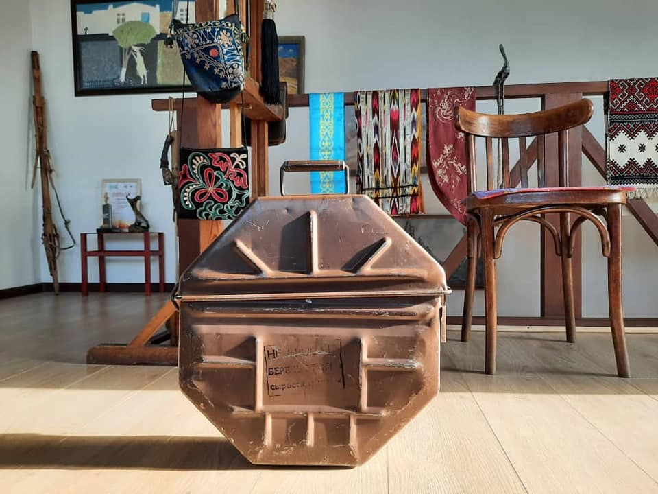

{% extends 'main/base.html' %}
{% block title %}
about
{% endblock %}
{% block content %}

"В процессе подготовки к съёмкам, тщательно разрабатывается каждый персонаж и, по мере необходимости, они наделяются предметами, которые косвенно расширяют возможности восприятия сценарного образа. Так, придумали для Кентавра яуф - ящик упаковки фильмокопий (обычно в них перевозят пленку для показа в кинотеатрах) и тем самым хотели подчеркнуть, что главный герой бывший киномеханик. По сюжету, он зарабатывает на стройке и в таком ящике, предположительно, носит необходимые инструменты и никогда не расстаётся с ним. Единственный раз, от растерянности, забыл у продавщицы бозо Шарапат, когда она объясняется ему в своей любви.
На сельской сходке Кентавра опорочили клеветой и выдворили из села. Тогда Шарапат догоняет своего возлюбленного и возвращает ему оставленный у неё яуф.
Покидая родные места, он дарит его юноше и девушке на мосту, те удивленно открывают крышку, но мы так и не видим, что там внутри. В итоге, ящик для инструментов превращается, в своего рода, символ - оберег кинематографа.
При сдаче рабочей версии монтажа, продюсер с немецкой стороны Танассис Каратанос стал настаивать, чтобы в конце картины появился титр, объясняющий зрителям, что это за предмет. И я вспомнил про Хичкоковский макгаффин: "Не важно, что это за вещь, главное, все хотят ею обладать", или в нашей интерпретации: те, кто не знают, что такое яуф, пусть приложат усилия понять смысл неопознанной вещи".
{% endblock %}